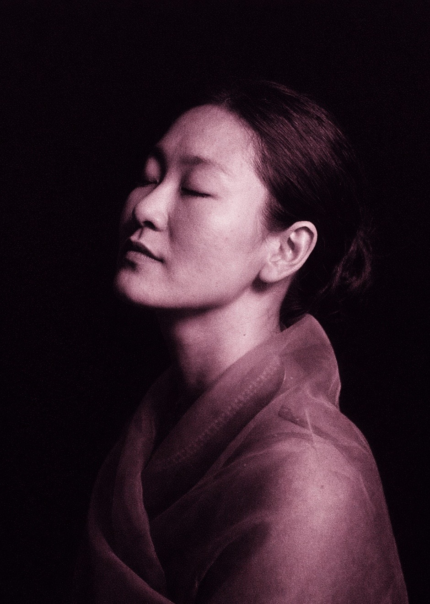
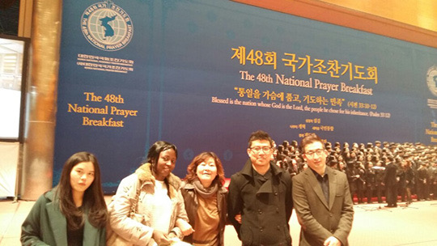
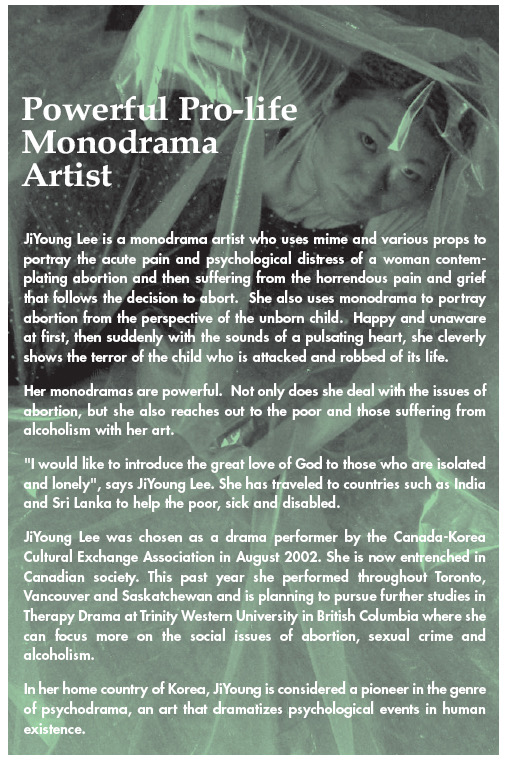
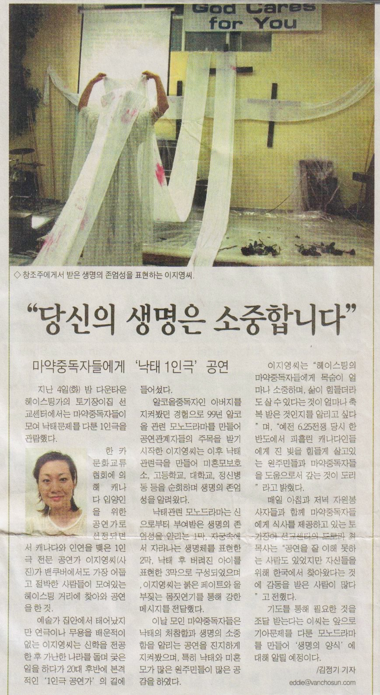
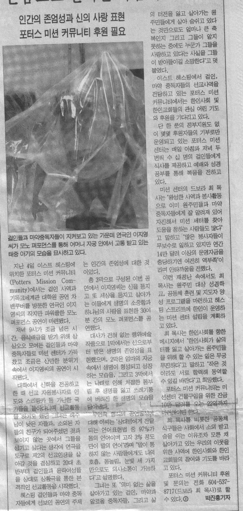
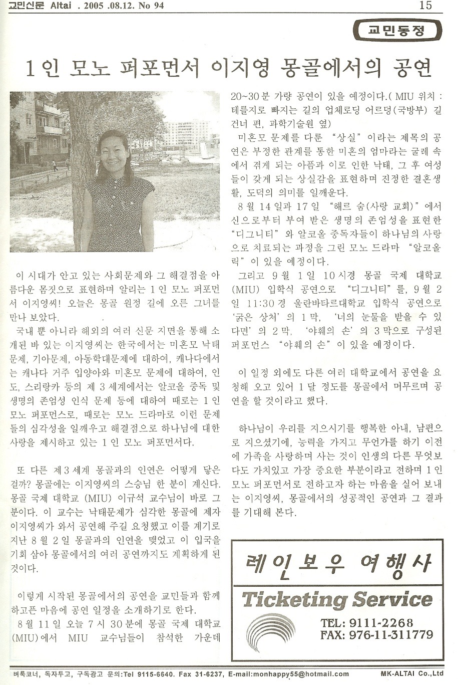

Pioneering the intersection of psychodrama, global missional leadership, and theological expression.
Explore Portfolio
profile.jpgMonodrama Performance Portrait
Ji-Young Lee is a distinguished pioneer in psychodrama and a preeminent global missional leader whose work redefines the boundaries of theological expression. Her professional identity represents a rare synthesis of high-level academic rigor and transformative performance artistry.
As a Professor of Worship Studies and an internationally acclaimed Monodramatist, Lee strategically utilizes performance art as a scalable medium for social advocacy and spiritual outreach. By dramatizing the complexities of human existence, she bridges the gap between abstract theological discourse and the visceral realities of psychological distress.
"A vital asset in global efforts to support the marginalized, establishing a new paradigm for 'performing the Word'."
Kingdomizer Mission Alliance (KMA) (2016-Present)
Kingdomizer Foreign Student Mission
Provided essential food and medical support for domestic missionaries and international students from developing countries (15 years).
Christian Medical Association
Managed medical support initiatives for underprivileged pastors and missionaries through a strategic healthcare provider network.
Canada Chongshin Denomination, Korea Branch (2021)
Westminster Graduate School of Theology (2025)
Chongshin University, Graduate School of Mission (2019)
Kingdomizer Mission Institute (2011)
Canada Christian College(2008)
Elevating performance standards to a global professional level through elite training in Canada to benchmark excellence in theological performance:
Social Advocacy and Human Dignity through Performance. Utilizing "The Monodrama" as a strategic tool to address acute pain and psychological distress.
Pro-life Monodrama; portraying the trauma of abortion and the value of life through harrowing mime and auditory narrative (pulsating heart).
"Joy" (환희); a signature physical piece focused on spiritual recovery, exaltation, and finding light in darkness.
"Alcoholic"; Psychodrama applied in clinical settings (Potters Mission, Psychiatric Wards) directly facilitating patient emotional recovery.
"Seoul Station" & "The Dignity"; addressing homelessness, isolation, and international adoption, proving body-language reaches the isolated.
Documented impact across major broadcasters and international newspapers validating Ji-Young Lee as a transformative global figure.

prayer-breakfast.jpgRev. Ji-Young Lee attended the 48th National Prayer Breakfast with international students she mentors through GCCA. Demonstrating human capital development in global missions, a mentored student from Ewha Womans University served as a scripture reader for the national event.
" JiYoung Lee is a monodrama artist who uses mime and various props to portray the acute pain and psychological distress of a woman contemplating abortion... She cleverly shows the terror of the child who is attacked and robbed of its life.

prolife-article.jpg
vancouver-chosun.jpgPerforming at the Potters Mission Community in East Hastings, known for its high concentration of marginalized individuals, Ji-Young Lee delivered a powerful pro-life monodrama.

vancouver-joongang.jpgIn a 30-minute silent mime performance consisting of three acts, Lee portrayed the formation of life, the tragedy of abortion, and ultimate restoration without using a single spoken word.

mongolia-news.jpgInvited by Professor Lee Gyu-seok of Mongolia International University (MIU), Ji-Young Lee embarked on a month-long mission to address social issues through art.
Her performances, including "Loss" (addressing the stigma of unwed mothers) and "The Dignity," were featured at major universities and local churches. The article highlighted her unique ability to present solutions to deep societal traumas through the beauty of movement and faith.
CTS Interview Archive
Performance Documentary